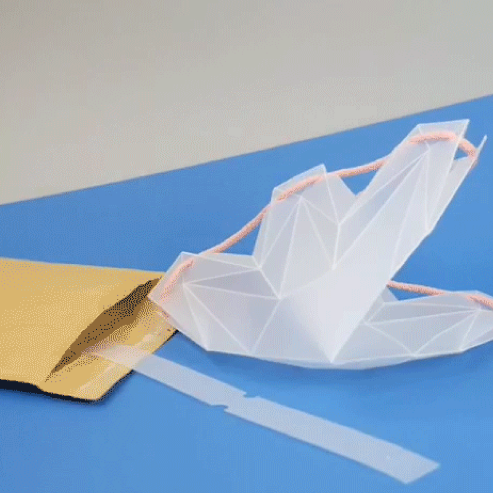
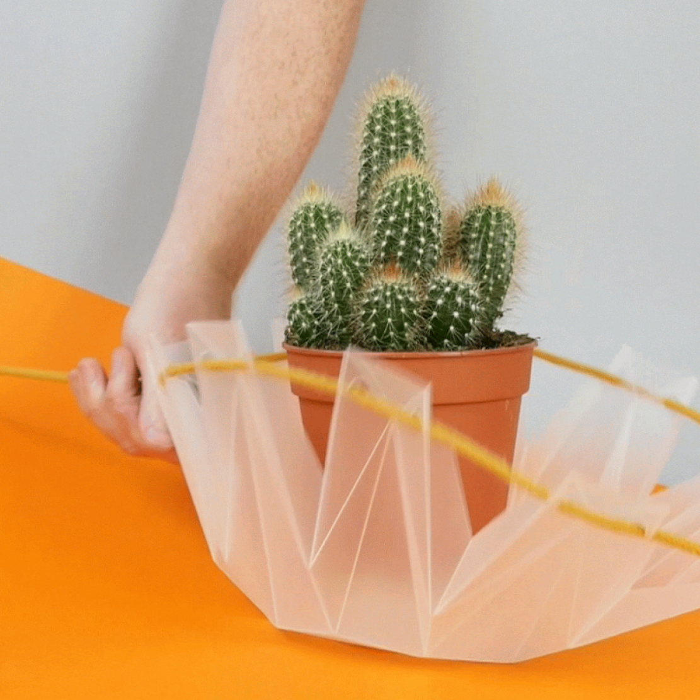
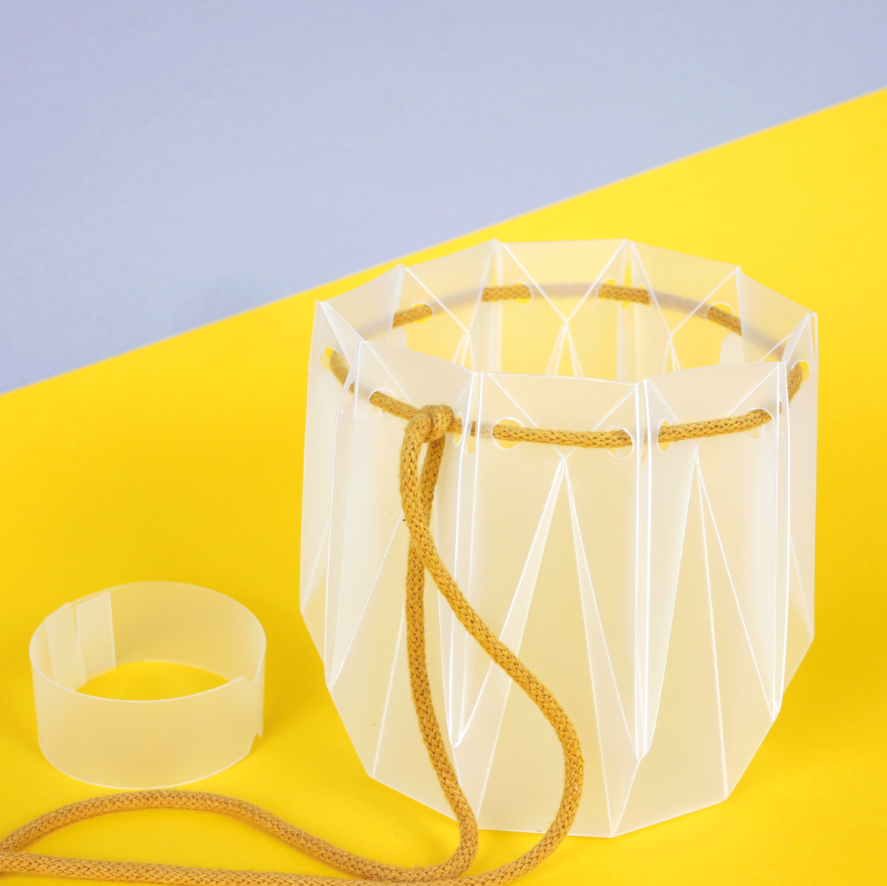

potr pots
potr pots
for whom?

For those who value durable things
Don’t worry if you happen to knock your POTR on the floor, unlike a traditional ceramic pot it will take the fall in its stride.
For those who love modern design
We strived to achieve something that would look beautiful in your home while being incredibly functional and intuitive to use.


For those who don't have enough time to regular water indoor plants
Water is drawn up through the cotton by the plant using tried and tested wicking technology. It's particularly useful if you aren’t able to water them yourself on a regular basis!
potr pots features

Flat pack postage
The pots will be shipped flat packed so they can be slipped through your letter box

Easy assembly
POTR Pots are super easy (and super satisfying) to assemble using the quick draw cotton cord

Self-watering
Simply add water into the pot - if your plant is thirsty it will automatically start drinking the water through the cotton cord. Magic!meet the potr team!

Andy and Martin are experienced product designers with a love of plants and the environment. They have over ten years combined industry experience in bringing products to market at some of the worlds largest consumer product companies.
Having studied Product Design Engineering together at the Glasgow School of Art, they have a long history of working as a team on a variety of design projects.
Having studied Product Design Engineering together at the Glasgow School of Art, they have a long history of working as a team on a variety of design projects.
potr pots
potr pots
Materials and Features
Environmentally friendly
All materials used in our pots are made from 100% recycled materials and are 100% recyclable at the end of life (should you ever choose to get rid of your POTR!). All materials have been sourced from within Europe to reduce our carbon footprint when transporting the raw materials, and all manufacturing is carried out in the UK.